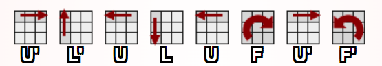

Le Rubik’s cube inventé en 1974 par le designer et architecte hongrois Ernö Rubik a été créé dans le but d'aider ses élèves à visualiser mieux l'espace 3D. Devenu de plus en plus populaire de nos jours, plusieurs compétitions ont été organisées.Aujourd’hui, le record du monde est maintenu par Yiheng Wang de la Chine, un enfant de 9 ans et qui a obtenu 4,69s comme moyenne pour le Rubik's cube de 3x3x3. D’ailleurs, le Rubik’s cube est même un jeu conseillé pour les personnes atteintes de trouble de mémoire en renforçant la capacité de mémoriser et de penser.
Le nombre de permutation est le nombre de possibilité de combinaison. Si on défait les pièces du Rubik's Cube: (Vous pouvez appuyer sur les chiffres du formule pour voir la logique derrière.)
Théorie du groupe
Associativité
Identité
Inverse
Fermeture
Retour
La théorie du groupe est un ensemble ayant une opération qui suit 4 axiomes: Associativité, Identité, Inverse et Fermeture.
Associativité
Exemples fréquents
Pour l'addition (x + y) + z = x + (y + z)
Pour la multiplication (x * y) * z = x * (y * z)
Exemple pour la Rubik's Cube
Tourner 2 fois 90 degré horaire vers la droite 1 fois 90 degré horaire vers la droite, 1 fois 90 degré horaire vers la droite = Tourner 1 fois 90 degré horaire vers la droite et 1 fois 90 degré horaire vers la droite, puis tourner 2 fois 90 degré horaire vers la droite (2R + R) + R = (R + R) + 2R
Retour
L'associativité est une propriété qui permet de changer l'ordre de la paranthèse des termes pour retrouver à la même résultat.
Identité
Exemples fréquents
Pour l'addition N = 0 x + 0 = 0 + x = x
Pour la multiplication N = 1 x * 1 = x
Exemple pour la Rubik's Cube
Rotation de 0 degré Tourner 0 degré vers la droite = Rester au même face du départ
Retour
L'identité est une propriété qu'en applicant un certain élément neutre N à un élément du groupe, ça donne le même élément.
Inverse
Exemples fréquents
Pour l'addition x + (- x) = N = 0
Pour la multiplication x * x^(-1) = N = 1
Exemple pour la Rubik's Cube
Tourner 90 degré horaire à droite, puis tourner 90 degré anti-horaire à droite = Au neutre N qui est de 0 degré R + R' = 0
Retour
L'inverse est une propriété où deux éléments d'un groupe mis ensemble forment un élément neutre N.
Fermeture
Exemples fréquents
Pour l'addition x + y = z qui fait partie du groupe
Pour la multiplication x * y = z qui fait partie du groupe
Contre-Exemple Exemple d'ensemble: 3, 7, 10, -2 x + y = 7 + 10 = 17 qui ne fait pas partie de l'ensemble. Ainsi, on peut affirmer que cet ensemble n'a pas la propriété de fermeture
Exemple pour la Rubik's Cube
Tourner 90 degré n'importe où va toujours donner un élément de l'ensemble du 43 quintillion de permutations possibles.
Retour
La fermeture est une propriété qui avec l'opération et peu importe l'élément forme un élément qui fait partie de l'ensemble.
SOLUTION
NOTATION CUBIQUE
La notation utilisée pour résoudre le Rubik’s Cube par un algorithme
Morwen Thistlewaite est l’un des premiers à publier une méthode de résolution
informatique efficace (R,L,U,B,F...), en 1981. Grâce à cette méthode, il est capable de le
résoudre en moins en 52 h(half-métrique).
Actuellement,on essaie d’atteindre les 20h de rotation mais cela grâce HébertKociemba qui a amélioré l’algorithme de Morwen.
Suite
Solution pour Débutant
1: Bord blanc
2: Face blanc
3: Couche centrale
4: Croix jaune
5: Permuter les bords
6: Coins en cycle
7: Orienter les coins
Retour
Bord blanc
On va commencer avec le Blanc.
Il faut essayer de former un signe plus sur le dessus du cube, en faisant correspondre les
couleurs des autocollants lateraux aux couleurs centres latéraux.
Pour y arriver: Il y a une méthode pour chaque situation
A - Si le blanc est situé à la face en dessous du milieu
B - Si le blanc se retrouve au bas
C(le dernier cube) - Si le blanc se retrouve au milieu
Retour
Face blanc
Lorsque les bords blancs sont trouvés, on passe à la résolution des coins.
Mettre tout d’abord le coin blanc à l’endroit montre par les flèches dans l’une des positions
en surbrillance. Répéter l’algorithme jusqu’à obtenir une face blanche unie avec les
autocollants latéraux qui correspondent aux centres latéraux.
Ça devrait ressembler à cela!
Retour
Couche centrale
Retourner le rubik’s, car on a fini avec la partie blanche. Insérer une pièce de bordure de la
position supérieure avant la couche intermédiaire (que vous pouvez voir avec la flèche rouge ) en utilisant l’algorithme gauche ou droite dépendant d'où tu veux mettre la pièce:
À Gauche:

À Droite:
Ça devrait ressembler à cela!
Retour
Croix jaune
Sur le haut du cube, il y a soit une croix jaune,une ligne ou un point . Notre but c’est de
former une croix jaune.
Suivre l’algorithme pour passer au prochain étape!
Retour
Permuter les bords
Même si on a une croix jaune, les bords ne correspondent pas à leurs couleurs latéraux.
Suit l'algorithme pour changer les bords jaunes avant et gauche dans la couche supérieure!
Retour
Coins en cycle
Maintenant, c’est le tour de mettre les coins jaunes en position finale.
Suit l'algorithme!
Retour
Orienter les coins
Voici la dernière étape pour orienter les coins jaunes. Refaire la même 2e étape que celle des coins blancs:
En suivant la démarche:
I. Tenir le cube dans la main avec un jaune non trouvé avec la position haut droite
II. Répéter l’algorithme en haut
III. Tourner la couche supérieure pour amener une pièce non résolu dans la position surbrillance
IV. Répéter encore l’algorithme jusqu’à qu’il soit résolu
V. Refaire III et IV pour les autres coins non résolu.